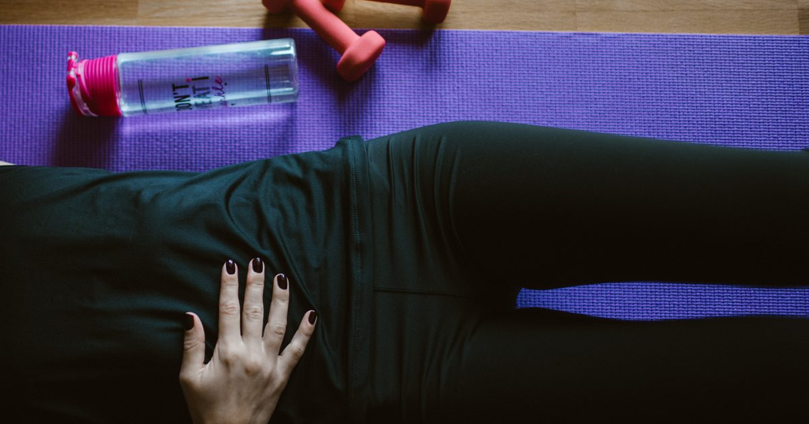

Quick Workouts & Plans
The Busy Person's Guide to Training in Under 30 Minutes
This is the guide I wanted when I had twenty minutes and no idea whether that was enough to matter. It covers what short sessions can and cannot do, how to build them, and which of the usual advice to ignore.

Most training advice is written as though time were free. Programmes assume an hour, warm-ups assume fifteen minutes, and the implicit message is that anything shorter is a compromise you should feel slightly bad about.
For anyone training around a job, that framing is not just unhelpful, it is backwards. Time is the binding constraint, and a session designed around a constraint tends to be better than one that ignores it. Short workouts are not truncated long ones; they are a different design problem with different correct answers.
This guide covers that design problem end to end: what the research supports, how to structure fifteen, twenty and thirty minutes, what to cut when something must go, and how to keep progressing when the session cannot get any longer.
The premise: time is the binding constraint
Start by being precise about what is actually scarce. It is rarely the ability to train hard, and rarely motivation in any meaningful sense. It is contiguous, uninterrupted, predictable time.
That distinction matters because it changes what you should optimise. If motivation were the constraint, the answer would be accountability and variety. If it is time, the answer is efficiency of stimulus per minute — and the two lead to very different sessions. Variety, for instance, is actively unhelpful when time is short, because every new exercise costs setup and learning time that produces no adaptation.
It also changes what counts as success. A programme that produces excellent results in sixty minutes and gets done twice a month is worse than one producing decent results in twenty minutes that gets done three times a week. This is not a consolation prize; it is the actual comparison, and short sessions win it.
What short sessions can and cannot do
The evidence here is more encouraging than most people expect, with one important caveat.
Weekly volume matters more than session length
The clearest finding is that muscle growth tracks weekly training volume rather than how that volume was packaged. A meta-analysis found a dose-response relationship between weekly resistance training sets and hypertrophy.1 The unit is the week, not the session.
Complementing that, a meta-analysis of training frequency found that when weekly volume is equated, distributing it across more sessions produces similar or slightly better hypertrophy than concentrating it.2 Short frequent sessions are therefore not a workaround; they are, if anything, marginally the better packaging.
Effort substitutes for load
The second finding matters specifically because home training has no way to add weight. A systematic review comparing low and high loads found comparable hypertrophy when sets were taken close to failure.3 You do not need a barbell; you need to get close to failure. That is achievable in a short session provided you do not waste the sets.
The caveat: short sessions have a hard ceiling on volume
A twenty-minute session, after warming up, contains roughly ten to twelve hard sets. That is the ceiling, and no amount of clever structuring raises it much. If your goal requires twenty-five sets per muscle group per week, short sessions will need to be frequent, and at some point you simply need more total time.
For everyone else — getting meaningfully stronger, building noticeable muscle, staying healthy — the ceiling is well above what most people are currently doing. Whether five minutes is enough is a genuine question I have looked at separately in are 5-minute workouts worth doing; fifteen and above is not really in doubt.
The body responds to what you did this week, not to how you divided it. That single fact is what makes short training viable.
The anatomy of a short session
Every effective short session has the same shape, and it differs from a long one in a specific way: the proportion of time spent on the main work is much higher.
- Warm-up — 90 seconds to 5 minutes, scaling with session length.
- Hardest or most technical movement — while fresh.
- Main compound work — the bulk.
- Optional accessory or finisher — only if time genuinely remains.
Note what is missing. There is no separate mobility block, no dedicated cool-down beyond walking around, and no isolation work. Those are not worthless; they are the first things that lose a competition for scarce minutes. The full reasoning on ordering, sets and rest is in how to structure a home workout.
The pairing trick
The single most useful structural technique for short sessions is pairing non-competing exercises. Alternate a lower-body and an upper-body movement, resting each while the other works. Every muscle group still gets two to three minutes of recovery, but almost none of the session is spent standing still.
This roughly halves the dead time without shortening actual recovery, and it is the difference between eight hard sets and twelve in the same twenty minutes.
What fits in fifteen minutes
Ninety seconds of warm-up and about thirteen minutes of work, which is roughly nine to twelve sets if you keep rest short.
At this length a circuit is the right structure, because the rest periods are necessarily short anyway and you may as well use them productively. Five or six movements covering the whole body, three rounds, forty seconds on and twenty off. That is the format of the 15-minute full-body workout, which is the session I would give anyone starting here.
What you cannot do in fifteen minutes: meaningful skill work, heavy single-movement focus, or anything requiring long rest. Accept that this is a general fitness and strength-endurance session and stop trying to make it something else.
What fits in twenty
Two minutes of warm-up, sixteen of work, two of coming down. Ten to twelve hard sets.
Twenty minutes is the shortest session where you can meaningfully choose between strength and conditioning rather than getting a blend by default. Use longer rest and fewer exercises for strength, or shorter rest and more movements for conditioning — the trade-off is laid out in circuit training at home.
It is also the natural home of the EMOM format, which solves the bodyweight problem of not knowing when to stop a set by putting the clock in charge. Three worked sessions are in EMOM workouts at home.
If conditioning is the goal, twenty minutes is enough for genuine interval work — and it can be done without impact, which matters in a flat. See the 20-minute no-jump HIIT workout.
What fits in thirty
Five minutes of warm-up, twenty-two of work, three to come down. Fourteen to eighteen sets, with real rest.
Thirty minutes is where short training stops being a compromise at all. You can open with a technical movement at full freshness, do three or four compound movements with proper ninety-second rest periods, and still add core work. For most people training at home, three thirty-minute sessions a week is the point of diminishing returns on time invested — more time produces more, but not proportionally.
This is the length the three-day home workout split is built around, and the length of the interruption-tolerant session in the 30-minute workout for busy parents. If your window is the middle of the working day, the low-sweat version is in the lunch break workout.
What to cut first
When a session has to shrink, cut in this order. The list is deliberately opinionated.
Isolation work
Direct arm and calf work goes first. Compound movements already train those muscles adequately for general purposes.
The cool-down and stretching
Stretching after training does not produce clinically important reductions in soreness,4 so cutting it costs less than people assume. Walk around for a minute and move on. If range of motion is a specific goal, do it as a separate short session — see cool-down stretches.
The third and fourth sets
Two hard sets of five movements beats four sets of two movements when the session is short, because coverage matters more than depth at low volumes.
Exercise variety
Six exercises becomes four. The four should be a squat, a push, a pull and a hinge.
The warm-up — but never entirely
Ninety seconds is the floor. Cutting it to zero is the one economy that genuinely raises injury risk, particularly first thing in the morning — see the 10-minute morning workout for why.
What never gets cut: the pulling movement. It is the exercise home routines skip most often and the one whose absence is most visible after six months.
Building a week from short sessions
The weekly structure matters more than any individual session, and the correct structure depends almost entirely on how many days you have.
| Sessions/week | Structure | Each muscle group trained |
|---|---|---|
| 2 | Full body | Twice |
| 3 | Full body | Three times |
| 4 | Upper / lower | Twice |
| 5–6 | Push / pull / legs | Twice |
Below four sessions a week, full-body training is not merely preferable but close to mandatory, because any split at that frequency leaves regions trained once a fortnight. The full argument is in full body vs split routines for short workouts. At four days, upper/lower takes over; at five or six, push/pull/legs becomes viable.
How many days you should actually aim for is its own question, and the answer is usually one fewer than you think — see how many days a week should you work out. To turn the number into an actual week, the weekly home workout schedule has templates and, more usefully, rules for when the week goes wrong.
Progressing when sessions cannot get longer
This is the real long-term problem with short training, and it has a clean answer. In a normal programme, progression eventually comes from doing more. When more is unavailable, it has to come from harder.
Four levers, in the order they should be used:
Get closer to failure. Free, immediate, and the most underused. Most people stop sets at discomfort rather than near failure. Since evidence suggests you do not need absolute failure but do need to be close,5 leaving one to three reps in reserve on working sets and taking the last set closer is a substantial increase in stimulus that costs no time.
Slow the lowering phase. A three-second descent makes any bodyweight movement significantly harder without adding a single repetition or a second of session time. The cheapest progression available.
Harder variations. Incline push-ups to floor to decline to archer. Two-legged squats to split squats to pistol progressions. This has the longest runway of any lever and is set out pattern by pattern in bodyweight exercise progressions.
Add a session, not minutes. If you genuinely need more weekly volume, a fourth twenty-minute session adds more than extending three sessions to twenty-five minutes each, and it is usually easier to find.
What to do when progress stalls despite all of this: check sleep and protein before adding anything. If neither is the issue and performance is actually declining, a light week may be warranted — the criteria are in deload weeks for home training.
The seven mistakes that waste a short session
1. Warming up for a third of the session. Fifteen minutes of mobility before a thirty-minute workout is a mobility session with training attached.
2. Treating rest as wasted time. For anything except conditioning, rest is what makes the next set hard enough to matter. Pair exercises instead of eliminating rest.
3. Too many exercises. Eight movements in twenty minutes means one set each, which is not enough of anything. Four movements and three sets each is a real session.
4. Changing the workout every week. Variety costs learning time and destroys your ability to tell whether anything is improving. Keep a session for at least six weeks.
5. Skipping the pulling movement. It needs equipment, so it gets dropped. Six months later the imbalance is obvious.
6. Never approaching failure. With no external load, effort is the only intensity lever you have. Stopping every set at moderate discomfort trains very little.
7. Judging the session by how sweaty it made you. Sweat tracks heat, not stimulus. A well-rested strength session is more productive and less sweaty than a breathless circuit — a distinction that matters especially in a lunch break session.
The only equipment that changes a short session
Short sessions are where equipment earns or fails to earn its place, because anything that takes ninety seconds to set up has consumed most of a working set. Two purchases genuinely change what is possible in twenty minutes, and almost nothing else does.
Something to pull against. This is the one real gap in equipment-free training, and it is the reason the pulling movement gets skipped. A doorway pull-up bar or a set of resistance bands anchored in a door turns an incomplete session into a complete one, and both cost less than a month of gym membership. Which to buy first depends on your starting strength; the case for each is in the minimalist home gym guide.
A mat, if you train on a hard floor. Less about performance than about removing friction. If floor exercises are uncomfortable, they get quietly dropped from the session, and the core and glute work is usually what goes.
What does not help a short session: anything requiring assembly, anything you have to fetch from another room, and anything that adds a decision. The best home setup for time-constrained training is the one that is already on the floor where you train.
Where to start
If you have never trained consistently at home, start with the 4-week beginner plan, which builds the habit before it builds the volume.
If you have trained before and want a session today, do the 15-minute full-body workout. If you want a structured week, use the three-day split. If fat loss is the goal, read the realistic 8-week plan first, mostly for what it says about what training does and does not contribute.
And if the honest problem is that sessions keep not happening rather than that they are too short, none of the above is the fix. Start instead with how to actually stick to a home workout habit.
Frequently asked questions
Is a 20-minute workout enough to build muscle?
Yes, for most people, provided it is frequent and the sets are taken close to failure. Muscle growth tracks weekly training volume rather than session length, and three twenty-minute sessions accumulate a meaningful weekly total.
How short can a workout be and still be effective?
Fifteen minutes reliably produces a genuine training effect if the sets are hard. Below about ten minutes it becomes difficult to fit enough working sets to matter, though very short sessions still have value as a floor on bad days.
Should short workouts be full body or split?
Full body, for anyone training four or fewer times a week. A twenty-minute session yields roughly ten to twelve hard sets; concentrating those on one region means it is trained once a week while everything else waits.
What should I cut when I run out of time?
Isolation work first, then the cool-down and stretching, then the third and fourth sets, then exercise variety. Never cut the warm-up entirely and never cut the pulling movement.
How do I keep progressing if my workouts cannot get longer?
Get closer to failure, slow the lowering phase to three seconds, move to harder exercise variations, and if you genuinely need more volume, add a session rather than lengthening existing ones.
How many sets can I fit into a short workout?
About nine to twelve in fifteen minutes, ten to twelve in twenty, and fourteen to eighteen in thirty. Pairing exercises that do not compete for the same muscles roughly halves the dead time without shortening real recovery.
Is it better to do one long workout or several short ones?
Several short ones, marginally. When weekly volume is equated, distributing it across more sessions produces similar or slightly better results, and shorter sessions are considerably easier to fit into a week reliably.
Sources and further reading
- Schoenfeld BJ, Ogborn D, Krieger JW. “Dose-response relationship between weekly resistance training volume and increases in muscle mass: A systematic review and meta-analysis.” Journal of Sports Sciences, 2017;35(11):1073–1082. PubMed.
- Schoenfeld BJ, Ogborn D, Krieger JW. “Effects of Resistance Training Frequency on Measures of Muscle Hypertrophy: A Systematic Review and Meta-Analysis.” Sports Medicine, 2016;46(11):1689–1697. PubMed.
- Schoenfeld BJ, Grgic J, Ogborn D, Krieger JW. “Strength and Hypertrophy Adaptations Between Low- vs. High-Load Resistance Training: A Systematic Review and Meta-analysis.” Journal of Strength and Conditioning Research, 2017;31(12):3508–3523. PubMed.
- Herbert RD, de Noronha M, Kamper SJ. “Stretching to prevent or reduce muscle soreness after exercise.” Cochrane Database of Systematic Reviews, 2011;(7):CD004577. PubMed.
- Vieira AF, Umpierre D, Teodoro JL, et al. “Effects of Resistance Training Performed to Failure or Not to Failure on Muscle Strength, Hypertrophy, and Power Output: A Systematic Review With Meta-Analysis.” Journal of Strength and Conditioning Research, 2021. PubMed.
- World Health Organization. WHO Guidelines on Physical Activity and Sedentary Behaviour. 2020.
- NHS. Physical activity guidelines for adults aged 19 to 64.
Comments
Comments are not enabled yet. Add a hosted comment embed (Disqus, Commento, Giscus) inside this container when you are ready.